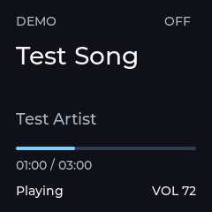

HARDWARE ANDA
WD Blue · WD5000LPCX
500 GB
ORICO 2020U3 · NTFS · USB-A / Micro-B
Terpakai: belum diketahuiBelum dipasang
PENYIMPANAN PRIBADI
Rancangan akses HDD di rumah, dari mana saja.
ORICO 2020U3 · NTFS · USB-A / Micro-B
Rencana web di Vercel, file tetap di rumah. ESP32 menghubungi relay cloud melalui koneksi keluar yang terenkripsi.
Firmware standar saat ini belum membaca NTFS. HDD tidak akan diformat otomatis. Profil diagnostik USB membaca sektor tanpa mount atau tulis. Akses file NTFS belum tersedia.
| Nama | Jenis | Ukuran | Diubah | Aksi |
|---|
Coba kata kunci atau filter lain.
PERANGKAT MEJA
ST7789 kini 240 × 240. Tampilan ringkas, tetap terbaca.

Render dari kode LVGL firmware, bukan foto hardware.
KONFIGURASI AKTIF DI SOURCE
Offset panel tetap perlu dikalibrasi pada modul fisik. Input M2 sudah ada di firmware sebagai log diagnostik. Uji hardware dan BLE masih menunggu.
Ubah draf perangkat →PREFERENSI PERANGKAT
Simpan rancangan Anda sebelum integrasi firmware dimulai.
M2 / N0 · FIRMWARE DIAGNOSTIK
Tanpa server PC di rumah. Dengan batas yang perlu kita selesaikan.
ESP32 membuka koneksi keluar. Relay meneruskan permintaan melalui koneksi itu.
Data dapat diteruskan tanpa salinan permanen di cloud. Dengan TLS per koneksi, relay masih dapat melihat data; ini belum enkripsi ujung-ke-ujung.
BISAKAH DENGAN VERCEL?
Vercel cocok untuk hosting web. WebSocket kini tersedia dalam beta, tetapi koneksi akan ditutup saat durasi Function habis. Browser dan ESP32 juga bisa masuk ke instance berbeda.
Relay perlu autentikasi, koordinasi antar-instance, reconnect, dan transfer per bagian yang dapat dilanjutkan. Hosting halaman saja belum memberikan akses ke HDD.
Dokumentasi Vercel ↗KEPUTUSAN PERTAMA
Stack FatFs standar proyek tidak membaca NTFS. Mempertahankannya berarti riset port driver, mulai read-only, tanpa jaminan kompatibilitas atau kestabilan.
Saran: buktikan alur dengan flashdisk FAT32 terpisah. HDD utama tetap utuh. FAT32 membatasi setiap file di bawah 4 GiB; pilihan ini belum tentu cocok untuk koleksi Anda.
PERANGKAT YANG SUDAH DIKENALI
HDD 500 GB NTFS: label 5 V / 0,55 A; datasheet WD mencantumkan arus puncak 1 A. Chip NS1068X disebut listing casing, belum diverifikasi pada unit fisik.
Rencana suplai 5 V 3 A bercabang langsung ke board dan daya HDD berproteksi. Kemampuan daya port board serta pad jumper belum diuji. Jangan menganggap adaptor USB-C menyediakan daya tambahan.
N0: baca identitas, kapasitas, LBA0 dan sektor awal MBR. Signature NTFS bukan akses file. Tidak ada mount, format atau tulis.
KANDIDAT TANPA LANGGANAN
Workers + Durable Objects dengan WebSocket hibernation dapat menjadi perantara. ESP32 membuka koneksi keluar; dashboard dapat tetap di Vercel.
Gratis dalam kuota, bukan transfer tak terbatas. Layanan relay dan login NAS belum dibuat. Kita mulai setelah akses file lokal terbukti.
Batas paket Cloudflare ↗Suplai 5 V untuk spin-up HDD, proteksi VBUS, bridge casing mendukung USB MSC BOT. Profil usb-probe memakai COM/UART untuk log; native USB untuk HDD. Pembacaan sektor tersedia, belum diuji fisik.
Mount read-only, daftar file, unduh melalui LAN, uji checksum dan cabut-pasang. USB 12 Mbit/s berarti hasil nyata di bawah 1,5 MB/s.
Riset NTFS read-only, atau migrasi terencana setelah backup dan persetujuan terpisah. Tidak ada format otomatis.
Uji login, isolasi pemilik, perangkat offline, koneksi putus, transfer lanjut, dan BLE musik bersamaan dengan Wi-Fi.
Satu transfer aktif dahulu. Bukan pengganti NAS untuk transfer besar, banyak pengguna, atau satu-satunya backup.